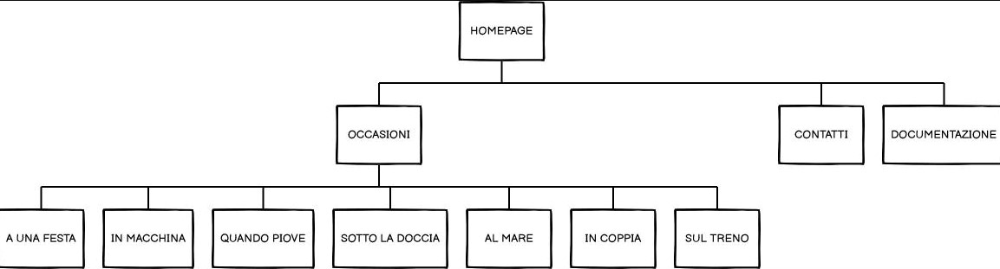
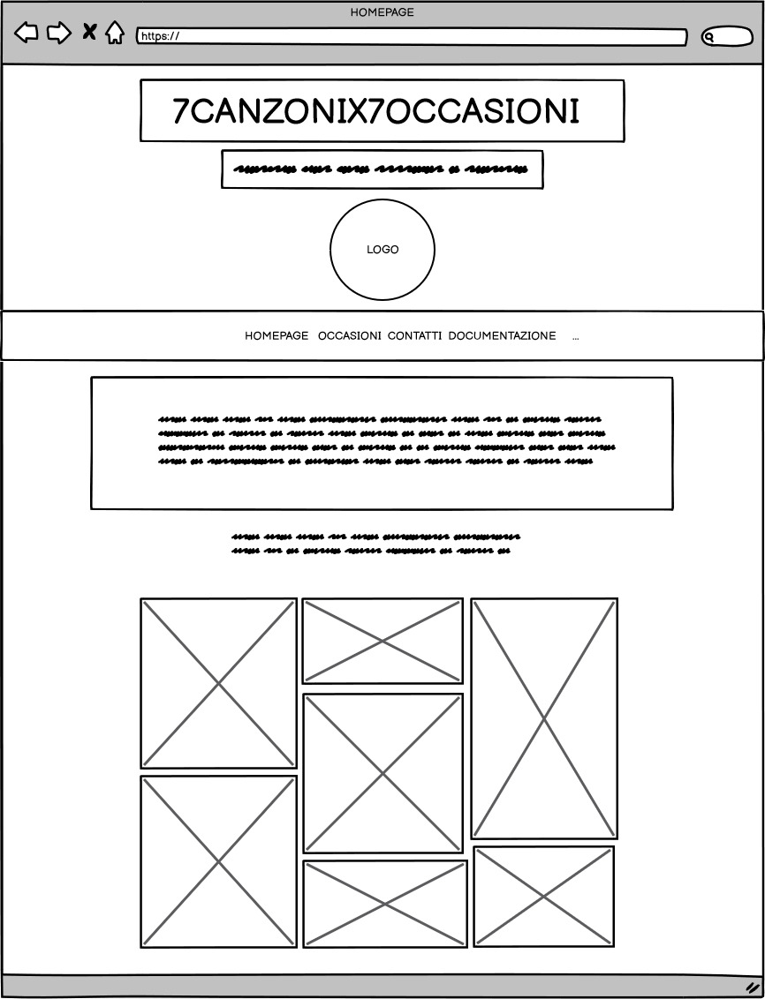
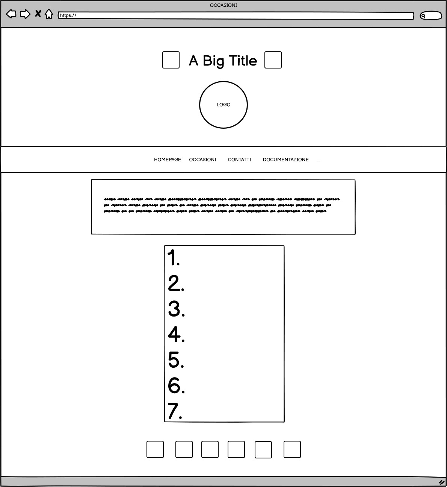
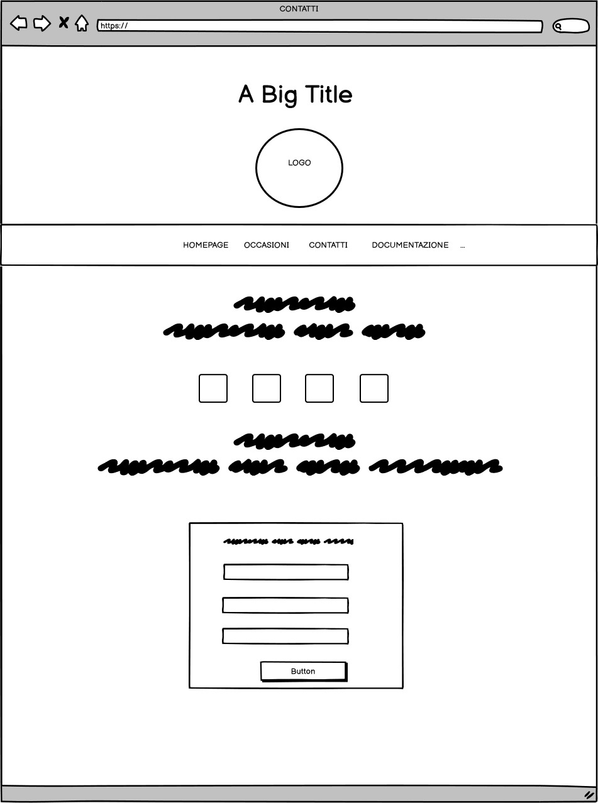

ABSTRACT
“7canzonix7occasioni” ha lo scopo di mettere a disposizione piccole playlist in grado di accompagnare quei momenti che durano troppo poco per potersi prendere la libertà di perderseli mentre si cerca la colonna sonora perfetta.
Il sito è rivolto a coloro per cui la musica rappresenta una costante nella vita di tutti i giorni e che cercano un modo veloce e semplice per poter avere il sottofondo giusto a portata di mano. Il valore aggiunto è la quantità ridotta di canzoni nelle playlist che permette di non perdersi nella vastità di canzoni delle innumerevoli playlist proposte quotidianamente.
PROJECT MANAGEMENT PLAN
BENCHMARKING
1. OBIETTIVI
1. OBIETTIVI
L’obiettivo principale è quello di facilitare agli utenti la ricerca delle canzoni perfette da mettere durante occasioni particolari grazie alle scelte musicali proposte da noi.
2. TARGET UTENTE
Il sito si rivolge agli ascoltatori abituali di musica, il target utente è ampio e variegato poiché i brani selezionati spaziano tra musica con generi molto diversi tra loro e che piacciono a nuove e vecchie generazioni.
3. COMPETITORS
• Spotify : l’organizzazione è coerente, il linguaggio è consono e i contenuti sono completi e approfonditi. Propone playlist di ogni tipo a partire dal genere, fino a categorie specifiche di persone cui sono indirizzate. A differenza di “7canzonix7occasioni” c’è una vastità troppo ampia di canzoni nelle playlist e di playlist stesse che rischiano di creare confusione nell’utente.
• Topsify : la pagina è un po’ confusionaria per via dei colori molto diversi tra loro e della grafica utilizzata ma l’organizzazione dei contenuti è facilmente intuibile mentre la nostra idea è di far navigare l’utente in un sito con un grafica minimale, il più semplice possibile e coerente per evitare così confusione.
• Moodplayl.ist : le palylist si basano nello specifico sullo stato d’animo dell’utente e non sono indirizzate ad accompagnare momenti specifici della vita del pubblico a cui è rivolto il nostro sito. A livello di contento rimanda semplicemente all’applicazione di spotify senza una vera e propria interazione se non quella iniziale.
• Topsify : la pagina è un po’ confusionaria per via dei colori molto diversi tra loro e della grafica utilizzata ma l’organizzazione dei contenuti è facilmente intuibile mentre la nostra idea è di far navigare l’utente in un sito con un grafica minimale, il più semplice possibile e coerente per evitare così confusione.
• Moodplayl.ist : le palylist si basano nello specifico sullo stato d’animo dell’utente e non sono indirizzate ad accompagnare momenti specifici della vita del pubblico a cui è rivolto il nostro sito. A livello di contento rimanda semplicemente all’applicazione di spotify senza una vera e propria interazione se non quella iniziale.
STRUTTURA E LAYOUT
1. ARCHITETTURA DEL SITO
1. ARCHITETTURA DEL SITO

2. WIREFRAME



3. LOOK AND FEEL
Il sito è organizzato in modo semplice e minimalista per una navigazione che evita confusione all’utente.
• i colori utilizzati sono #ffb3ec per lo sfondo, #b300b3 per i titoli, #c61aff per i paragrafi e #990099 per il menù e le icone;
• sono stati utilizzati due font : Koulen per i titoli e le voci del menù e Merriweather per il corpo testo;
• l’impaginazione delle pagine si ripete in modo costante per tutto il sito dando leggibilità e chiarezza al sito e ai contenuti.
• i colori utilizzati sono #ffb3ec per lo sfondo, #b300b3 per i titoli, #c61aff per i paragrafi e #990099 per il menù e le icone;
• sono stati utilizzati due font : Koulen per i titoli e le voci del menù e Merriweather per il corpo testo;
• l’impaginazione delle pagine si ripete in modo costante per tutto il sito dando leggibilità e chiarezza al sito e ai contenuti.
LINGUAGGI E STUMENTI
1. LINGUAGGI UTILIZZATI
• HTML
• CSS
• CSS
2. STRUMENTI UTILIZZATI
• Sublimetext2 per la scrittura HTML e CSS
• W3school per approfondire aspetti di HTML e CSS
• Adobe Color per la scelta dei colori
• Bootstrap per alcuni template
• Free Logo Design per la creazione del logo
• FontAwesome per le icone
• Pexels.com per le immagini della homepage
• GoogleFonts per i font
• Balsamiq per la struttura ad albero e i wareframe
• Google Analytics per il monitoraggio del sito
• GitHub per la pubblicazione del sito
• social per pubblicizzare il sito
• W3school per approfondire aspetti di HTML e CSS
• Adobe Color per la scelta dei colori
• Bootstrap per alcuni template
• Free Logo Design per la creazione del logo
• FontAwesome per le icone
• Pexels.com per le immagini della homepage
• GoogleFonts per i font
• Balsamiq per la struttura ad albero e i wareframe
• Google Analytics per il monitoraggio del sito
• GitHub per la pubblicazione del sito
• social per pubblicizzare il sito
COMMUNICATION STRATEGY
BACKGROUND
Sebbene Spotify, Topsify e Moodplayl.ist siano piattaforme incentrate sulla musica ben organizzate, è proprio perché presentano una vastissima quantità di playlist e di canzoni all’interno di queste che “7canzonix7occasioni” si focalizza su poche canzoni adatte a fare da sottofondo a precise e particolari occasioni in modo da permettere all’utente di godersele al meglio.
OBIETTIVI COMUNICATIVI
Questo progetto si prefigge come obiettivo quello di raggiungere un numero sempre più ampio di utenti, per metterli a conoscenza di un modo semplice e veloce in grado di trasformare un momento che andrebbe a finire nel dimenticatoio, in un ricordo davvero indimenticabile grazie alla musica selezionata sempre in aggiornamento.
Come obbiettivo numerabile, in questa prima fase di pubblicazione, vorrei raggiungere almeno 60 visitatori unici al mio sito e feedback tramite mail/messaggi da esterni.
TARGET AUDIENCE E MESSAGGIO
TARGET
TARGET
Il target utente è piuttosto ampio, non specifico. È un sito rivolto a chi ama la musica e a chi l’ascolta in qualsiasi momento : può rivolgersi a giovani ragazze e ragazzi, adulti o anziani, perché la musica non ha età anzi ringiovanisce e dovrebbe alleggerire l’animo. Viene inoltre sempre preso in considerazione l’utente casuale, incuriosito e appassionato. L’unico requisito necessario è quello di avere una minimo di familiarità con il digitale e i siti web.
Questi gruppi vengono raggiunti tramite canali social, attraverso il passaparola e/o grazie al successo della promozione.
Una possibile barriera potrebbero essere discordanze per quanto riguarda i gusti musicali.
MESSAGGIO
Lo scopo di “7canzonix7occasioni” è quello di fare apprezzare maggiormente quello che si sta vivendo, con uno stato d’animo diverso. Il coinvolgimento emotivo quando c’è un sottofondo musicale è diverso rispetto a quando si fanno le cose in silenzio, vengono infatti suggeriti dei brani che possono far percepire in modo diverso quello che nella vita di tutti i giorni può essere dato per scontato.
PROMOZIONE
La promozione del sito è stata effettuata tramite: pubblicazione del link nella funzione "stories" di Instagram, messaggio whatsapp grazie alla condivisione dell’URL, passaparola vivavoce
VALUTAZIONE DEI RISULTATI
In aggiornamneto